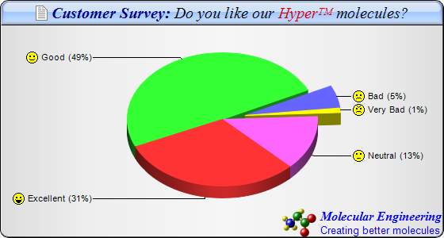

This example extends the
Icon Pie Chart (1) example to demonstrate using
CDML to include multiple fonts and colors in chart title, sector labels and to draw logo. It also demonstrates silver background color, rounded corners, and glass shading effect for title.
The following is the command line version of the code in "cppdemo/iconpie2". The MFC version of the code is in "mfcdemo/mfcdemo". The Qt Widgets version of the code is in "qtdemo/qtdemo". The QML/Qt Quick version of the code is in "qmldemo/qmldemo".
#include "chartdir.h"
int main(int argc, char *argv[])
{
// The data for the pie chart
double data[] = {28, 45, 5, 1, 12};
const int data_size = (int)(sizeof(data)/sizeof(*data));
// The labels for the pie chart
const char* labels[] = {"Excellent", "Good", "Bad", "Very Bad", "Neutral"};
const int labels_size = (int)(sizeof(labels)/sizeof(*labels));
// The icons for the sectors
const char* icons[] = {"laugh.png", "smile.png", "sad.png", "angry.png", "nocomment.png"};
const int icons_size = (int)(sizeof(icons)/sizeof(*icons));
// Create a PieChart object of size 560 x 300 pixels, with a silver background, black border, 1
// pxiel 3D border effect and rounded corners
PieChart* c = new PieChart(560, 300, Chart::silverColor(), 0x000000, 1);
c->setRoundedFrame();
// Set the center of the pie at (280, 150) and the radius to 120 pixels
c->setPieSize(280, 150, 120);
// Add a title box with title written in CDML, on a sky blue (A0C8FF) background with glass
// effect
c->addTitle(
"<*block,valign=absmiddle*><*img=doc.png*> Customer Survey: <*font=Times New Roman "
"Italic,color=000000*>Do you like our <*font,color=dd0000*>Hyper<*super*>TM<*/font*> "
"molecules?", "Times New Roman Bold Italic", 15, 0x000080)->setBackground(0xa0c8ff,
0x000000, Chart::glassEffect());
// Add a logo to the chart written in CDML as the bottom title aligned to the bottom right
c->addTitle(Chart::BottomRight,
"<*block,valign=absmiddle*><*img=molecule.png*> <*block*><*color=FF*><*font=Times New "
"Roman Bold Italic,size=12*>Molecular Engineering\n<*font=Arial,size=10*>Creating better "
"molecules");
// Set the pie data and the pie labels
c->setData(DoubleArray(data, data_size), StringArray(labels, labels_size));
// Set 3D style
c->set3D();
// Use the side label layout method
c->setLabelLayout(Chart::SideLayout);
// Set the label background color to transparent
c->setLabelStyle()->setBackground(Chart::Transparent);
// Add icons to the chart as a custom field
c->addExtraField(StringArray(icons, icons_size));
// Configure the sector labels using CDML to include the icon images
c->setLabelFormat("<*block,valign=absmiddle*><*img={field0}*> {label} ({percent|0}%)");
// Explode the 3rd and 4th sectors as a group (index = 2 and 3)
c->setExplodeGroup(2, 3);
// Set the start angle to 135 degrees may improve layout when there are many small sectors at
// the end of the data array (that is, data sorted in descending order). It is because this
// makes the small sectors position near the horizontal axis, where the text label has the least
// tendency to overlap. For data sorted in ascending order, a start angle of 45 degrees can be
// used instead.
c->setStartAngle(135);
// Output the chart
c->makeChart("iconpie2.png");
//free up resources
delete c;
return 0;
}
© 2023 Advanced Software Engineering Limited. All rights reserved.